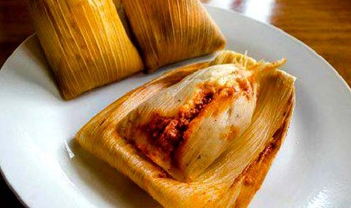

Platillo popular
Los chuchitos

Los chuchitos son pequenos, practicos y muy representativos de la gastronomia guatemalteca. Su mezcla de masa de maiz, recado y relleno los vuelve parte habitual de reuniones y ventas tradicionales.